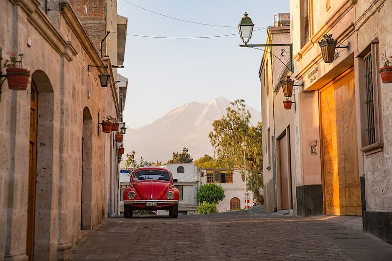

Known as the "White City" due to its architecture carved from volcanic stone, Arequipa shines under year-round sunny weather and blue skies, a setting that invites you to stroll around and admire the beauty of its monuments, snow-capped peaks, volcanoes, and deep canyons. You can also enjoy its exquisite cuisine and a vibrant nightlife that will undoubtedly entice you to return more than once.

Photo by Havardtl, CC BY 4.0, via Wikimedia Commons